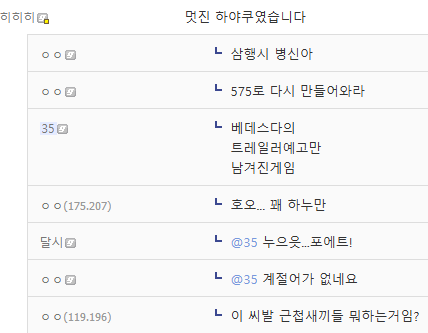
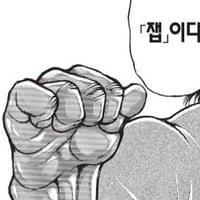

하야쿠 하야쿠~
일본 시 아님?
그건 하이쿠
앗차차!!!!!
하야쿠 이쿠 머 이런건가
정보) 하이쿠다
555는 한시 아님?
하이쿠 유명한거임?
심슨에서 리사 숙제로 나오던디
술게임 중에서는 유명하지
특유의 엄격한 규칙을 지닌 시라고 보면 된다 우리나라에도 비슷한 향가, 시조란게 있음
매우 짧은 글로 글쓴이의 지적수준과 문장구사력 어휘력 재치를 한번에 파악할 수 있기 때문에 옛날이든 현대든
엄격한 규칙만 완급을 줘서 변화하고 있을뿐 이따금 보이고 있고 이런 이유로 유럽, 중동, 아시아를 불문하고
규칙만 다를뿐 유사한 성질의 글들은 만국 공통으로 보여지고 있음
하이큐
제대로 된게 없어 ㅋㅋㅋ


하야쿠는 또 뭐여 시벌 ㅋㅋㅋ